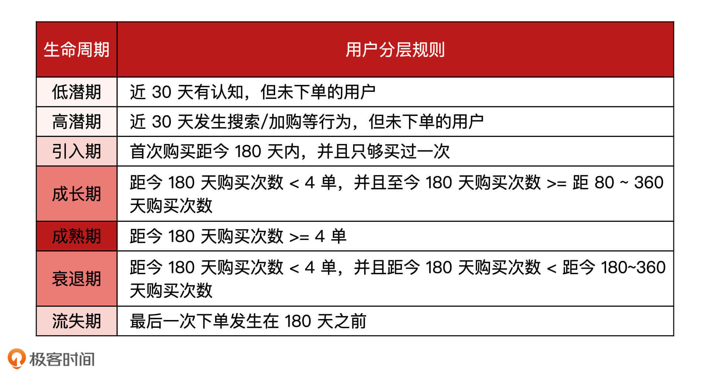
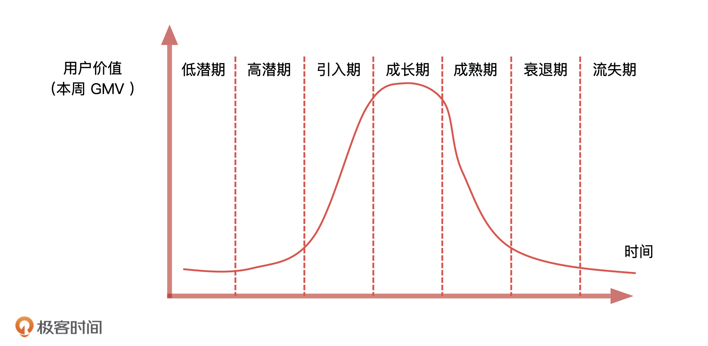
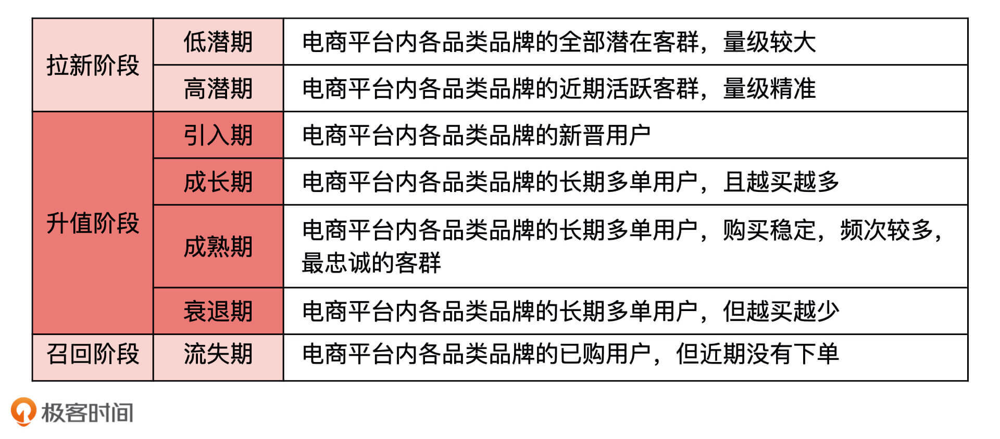
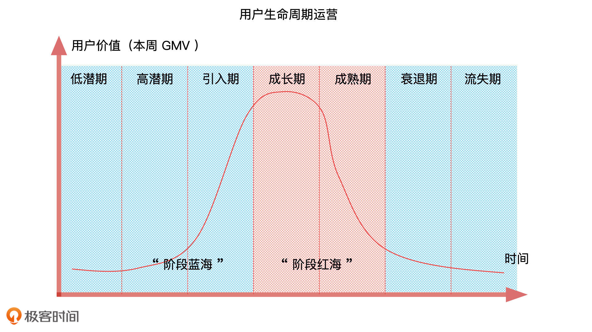

- 00 开篇词 你好，产品经理！你的未来价值壁垒在哪儿？.md.html
- 01 行业视角：产品经理眼中的人工智能.md.html
- 02 个人视角：成为AI产品经理，要先搞定这两个问题.md.html
- 03 技术视角：AI产品经理需要懂的技术全景图.md.html
- 04 过来人讲：成为AI产品经理的两条路径.md.html
- 05 通过一个 AI 产品的落地，掌握产品经理工作全流程.md.html
- 06 AI 模型的构建过程是怎样的？（上）.md.html
- 07 AI模型的构建过程是怎样的（下）.md.html
- 08 算法全景图：AI产品经理必须要懂的算法有哪些？.md.html
- 09 K近邻算法：机器学习入门必学算法.md.html
- 10 线性回归：教你预测，投放多少广告带来的收益最大.md.html
- 11 逻辑回归：如何预测用户是否会购买商品？.md.html
- 12 朴素贝叶斯：让AI告诉你，航班延误险该不该买？.md.html
- 13 决策树与随机森林：如何预测用户会不会违约？.md.html
- 14 支持向量机：怎么预测股票市场的涨与跌？.md.html
- 15 K-means 聚类算法：如何挖掘高价值用户？.md.html
- 16 深度学习：当今最火的机器学习技术，你一定要知道.md.html
- 17 模型评估：从一个失控的项目看优秀的产品经理如何评估AI模型？.md.html
- 18 核心技能：产品经理评估模型需要关注哪些指标？.md.html
- 19 模型性能评估（一）：从信用评分产品看什么是混淆矩阵？.md.html
- 20 模型性能评估（二）：从信用评分产品看什么是KS、AUC？.md.html
- 21 模型性能评估（三）：从股价预测产品看回归算法常用的评估指标.md.html
- 22 模型稳定性评估：如何用PSI来评估信用评分产品的稳定性？.md.html
- 23 模型监控：产品经理如何建设算法模型监控指标体系？.md.html
- 24 推荐类产品（一）：推荐系统产品经理的工作职责与必备技能.md.html
- 25 推荐类产品（二）：从0打造电商个性化推荐系统产品.md.html
- 26 预测类产品（一）：用户复购意向预测的底层逻辑是什么？.md.html
- 27 预测类产品（二）：从0打造一款预测用户复购意向的产品.md.html
- 28 预测类产品（三）：从0打造一款“大白信用评分产品”.md.html
- 29 自然语言处理产品：从0打造一款智能客服产品.md.html
- 30 AI产品经理，你该如何提升自己的价值？.md.html
- 31 AI产品经理面试，这些问题你必须会答！.md.html
- 春节加餐1 用户增长模型：怎么利用AI技术判断新渠道性价比？.md.html
- 春节加餐2 一次答疑，带你回顾模型评估的所有基础概念.md.html
- 期中周测试题 ，你做对了吗？.md.html
- 期中答疑 AI产品经理热门问题答疑合集.md.html
- 结束语 唯一不变的，就是变化本身！.md.html
- 捐赠
26 预测类产品（一）：用户复购意向预测的底层逻辑是什么？
你好，我是海丰。
一天，你们公司的运营同学来找你“诉苦”说：“哎，现在618和双11的活动真是越来越难做了，很多用户都只是在促销期间薅一次羊毛，之后就再也不消费了。我们的运营成本越来越高，公司的ROI（投资回报率）却不见提升。看来，我这个月的奖金又要泡汤了。”
听了他的话，你发现解决这个问题的关键，就是提升用户的复购意向也就是用户复购率。那么，作为产品经理，我们该怎么帮助他解决这个问题呢？
如何理解复购率？
刚才我们说，解决这个问题的关键就是提升用户的复购率。为什么这么说呢？别着急，我们先来学习几个基本的概念。
首先是复购，复购简单来说就是客户重复购买商品的次数（购买次数 ≥ 2）。有复购就有复购率，复购率=重复购买人数/总购买人数。一般情况下，业务同学在计算用户转化（用户转化体现在精分维度就是销售额）的时候会用到复购率这个指标，它的计算公式：销售额 = 流量 × 转化率 × ARPU（客单价） × 复购率。
其次，我们来了解一下什么是盈利：只有当用户的消费金额大于商品成本以及获客成本的时候才叫盈利。举个例子，你们公司售卖的商品是帽衫，它的客单价是100元，成本是50元，而你们的获客成本也是50元。这个时候，如果有100 个新客户进来购买了商品，你们盈利了吗？显然没有。但如果这 100 个新客户中有 50 个人又进行了二次购买，这个时候你们就是盈利的，因为这一次你们的获客成本是0元，盈利了2500元。
因此，提升复购率就是在提升商家的盈利能力。 那我们该如何提升用户的复购率呢？
如何提升用户复购率
根据公式：复购率 = 重复购买人数/总购买人数，我们知道，提升复购率的重点就在于想办法增加复购人数，而提升复购人数的基础就是做用户生命周期管理。这是因为，要想提升复购人数，我们就要了解哪些用户是可以成为复购用户的高潜用户，而发现高潜用户的前提则是对用户进行分层。
更具体点来说，产品经理只有了解业务发展各个时期的用户特点，才能保证在不同阶段制定出适合的产品策略，来激发新用户的加入、激活老用户的复购，进而提升客户的转化和留存。
也因此，对于产品和运营同学来说，如果理解和掌握了用户生命周期管理的底层逻辑，再把它应用在自己的产品上，就能在很大程度上拉升各方面的产品指标。同时，这项能力在市场上也非常稀缺，我也希望它能成为你面试和工作上的助力。
接下来，我们就来讲一讲用户生命周期的基本概念，用户周期管理的具体操作，以及根据用户生命周期管理来制作用户复购模型的底层逻辑。
什么是用户生命周期？
如何定义用户生命周期呢？我们以电商平台为例，像京东这样累计了近 10 亿用户消费行为的电商平台，可以根据用户在商品品类上的历史购买行为的变化，通过规则将用户划分为低潜期、高潜期、引入期、成长期、成熟期、衰退期和流失期，如下表所示。

我们可以基于如上的分层规则对用户生命周期进行划分，也可以根据我们第 15 讲中基于聚类分析的方式发掘用户价值分层 RFM，来最终定义用户的生命周期。
为了直观地表示用户生命周期，我们可以构建一个坐标系，它的横轴是用户使用电商平台的时长，纵轴是用户价值，根据用户行为和品类关系，我们可以绘制出一条曲线。具体的示意图如下：

最终，沿着这条用户生命周期曲线，我们可以把用户分成三大阶段六大时期，具体的划分情况如下表：

如何管理用户生命周期？
知道了什么是用户生命周期，那什么是用户生命周期管理呢？
所谓用户生命周期管理，其实是一套通用的运营体系。具体来说，就是在用户接触产品到离开产品的整个生命周期中，通过数据分析，以及一些运营手段来提升各阶段用户的价值。比如，对高潜用户做转化策略，对流失用户做挽留策略，最终的目的都是提升平台用户的“正向跃迁率”，也就是其他阶段用户向成熟期阶段跃迁的比率。
当然，很多产品和运营同学经常会进入一个误区，那就是将促销力度过度聚焦于成长、成熟期的“高净值用户”。这样很可能造成“僧多粥少”，以及单客户竞价过高的局面。那么，基于生命周期模型更科学的分析视角是，跳出“阶段红海”（成长期和成熟期的用户），进入“阶段蓝海”（非成长期和成熟期的用户）。 为什么这么说呢？

从上面图中我们发现，成长、成熟阶段也就是阶段红海的用户购买转化率较高，毫无疑问它们是平台大盘运营上的重点。其他蓝海阶段的GMV比较低，如果生命周期模型针对阶段蓝海的用户的运营，就可以很显著提高用户的复购转化。并且，在用户竞价不变的前提下，转化“阶段蓝海”的用户才能让品类投放实现更大幅的 ROI 增长。
所以，我们此时应该做的，就是提高“阶段蓝海”的用户跃迁率，将营销视角拓展到全量的“未来高净值用户”，这样电商平台中的品类或品牌会获取更多细分人群上的差异化竞争优势。 这一步也叫做提升平台用户的正向跃迁率。它的公式是：正向跃迁率 =其他阶段向成熟期跃迁的用户数/本次运营的总用户数。
那么，问题又来了，像京东这样大的电商平台，在运营实践的过程中，我们往往会发现原来的低高潜用户基数庞大，所以在分析人群结构和圈选人群的时候就会非常困难，那该怎么精准地对“阶段蓝海”用户做运营呢？更进一步来说，我们该怎么对“阶段蓝海”用户做复购策略，提高他们的复购率呢？
提升用户复购
一般来说，我们会针对高潜期和引入期的用户做复购，因为处于这两个阶段的用户在“阶段蓝海”的用户中最容易形成复购。选定了人群，接下来我们就要找出有哪些因素会影响用户的购买转化。具体来说，我们可以从两个方面来考虑，分别是用户维度和商品维度。
首先，用户维度方面的影响是指，不同用户的性别、年龄、喜好、月收入、网购习惯等会影响用户对品类的复购行为。我们可以从用户画像和用户偏好来考虑。比如说，大部分女性客户对自己喜爱品牌的服饰、化妆品、包包购买的频率会更高，而男性用户更容易购买自己喜爱品牌的数码产品和鞋子。
其次，商品维度的影响是指商品的品类不同对用户复购行为的影响。
比如说，小家电、数码产品这种类目属性往往就决定了它们的复购率会偏低，而图书、服装这些类目的复购率则相对偏高。不过，要想准确识别商品品类未来的复购用户并不简单，因为每个类目和客户都有其自身的内在特点。因此，通过数据和算法进行预测用户复购概率的时候，我们往往也会基于特定的品类。
最后，我们构建用户复购模型，也就是找到用户特征与商品品类之间的关联关系，再通过分类算法计算出某个用户在品类下的 CVR。那具体怎么做呢？下节课我们再详细来讲。这节课，我们先理清制作用户复购模型的底层逻辑就可以了。
小结
提升复购率就是在提升商家的盈利能力，想要提升复购率，我们就要做用户生命周期管理。用户生命周期管理告诉我们，在面对增长困难、获客成本增加的情况下，我们要重新梳理用户运营的本质与核心，跳出急功近利的“阶段红海”，而转向细分阶段的“阶段蓝海”，从而海阔天高、破浪长风。
我们首先要做的就是定义用户生命周期，手段有两个：
- 基于阶段规则定义用户分层，分别是低潜期、高潜期、引入期、成长期、成熟期、衰退期和流失期；
- 基于聚类分析定义用户分层，也就是基于聚类分析的 RFM 用户价值划分。
在定义完用户生命周期后，我们要对“阶段蓝海”的用户做用户行为分析，构造算法模型，找到预估 CVR 最高的用户。
课后讨论
最后，我想请你想一想，在你的业务场景中，有哪些切实有效的精细化运营手段？
欢迎在留言区分享你的故事，我们下节课见！
© 2019 - 2023 Liangliang Lee. Powered by gin and hexo-theme-book.